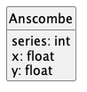

Demonstration Code¶
Example 1¶
Some imports
from pathlib import Path
from csv import DictReader
from statistics import mean, stdev
from funcsql import *
Read the raw data file.
This function simply returns the list of dictionaries from the csv.DictReader.
The columns aren’t useful as shown.
DEFAULT_PATH = Path("tests") / "Anscombe_quartet_data.csv"
def get_series(path: Path = DEFAULT_PATH) -> list[dict[str, str]]:
"""
Get all four series.
:param path: source path
:return: a list of dictionaries with keys "series", "x", and "y".
"""
with open(path) as source_file:
rdr = DictReader(source_file)
return list(rdr)
The column names are x123, y1, y2, y3, x4, and y4, which require restructuring.
We want a table like the following:

There are four series, each use a subset of columns:
{series: 1, x: x123, y: y1}
{series: 2, x: x123, y: y2}
{series: 3, x: x123, y: y3}
{series: 4, x: x4, y: y4}
One way to restructure this is a UNION of four queries.
SELECT 1, x123 as x, y1 as y
FROM raw
UNION
SELECT 2, x123 as x, y2 as y
FROM raw
UNION
SELECT 3, x123 as x, y3 as y
FROM raw
UNION
SELECT 4, x4 as x, y4 as y
FROM raw
We can do this as follows without the overhead of creating and loading one table that we’ll used to create a second table.
def restructure(sample_rows: list[dict[str, str]]) -> list[Row]:
"""
Transform the mish-mash of columns to a series number, and x, y values.
:param samples: the raw results of the CSV ``DictReader``.
:return: A list of ``Row`` instances.
"""
samples = Table("samples", sample_rows)
q1 = Select(
series=lambda qc: 1,
x=lambda qc: float(qc.samples.x123),
y=lambda qc: float(qc.samples.y1),
).from_(samples)
q2 = Select(
series=lambda qc: 2,
x=lambda qc: float(qc.samples.x123),
y=lambda qc: float(qc.samples.y2),
).from_(samples)
q3 = Select(
series=lambda qc: 3,
x=lambda qc: float(qc.samples.x123),
y=lambda qc: float(qc.samples.y3),
).from_(samples)
q4 = Select(
series=lambda qc: 4,
x=lambda qc: float(qc.samples.x4),
y=lambda qc: float(qc.samples.y4),
).from_(samples)
rows = (
list(fetch(q1)) + list(fetch(q2))
+ list(fetch(q3)) + list(fetch(q4))
)
The real goal is to compute some descriptive statistics after restructuring the data.
SELECT series, MEAN(x), MEAN(y)
FROM anscombe
GROUP BY series
The query is a bit longer, but (again) doesn’t involve the overhead of loading table. Or – in this example – loading one table with raw data and then inserting into another table to restructure the data.
We’ve highlighted the funcsql.Select that corresponds to the statistics query.
def main() -> None:
data = restructure(get_series())
anscombe = Table.from_rows("anscombe", data)
print("Series I")
query = (
Select(x=lambda qc: qc.anscombe.x, y=lambda qc: qc.anscombe.y)
.from_(anscombe)
.where(lambda qc: qc.anscombe.series == 1)
)
for r in fetch(query):
print(f"{r.x:6.2f}, {r.y:6.2f}")
print("Means")
stats_query = (
Select(
mean_x=Aggregate(mean, lambda qc: qc.anscombe.x),
mean_y=Aggregate(mean, lambda qc: qc.anscombe.y)
)
.from_(anscombe)
.group_by(series=lambda qc: qc.anscombe.series)
)
for r in fetch(stats_query):
print(f"{r.series} {r.mean_x:.2f} {r.mean_y:.2f}")
This does the same processing without the conceptual overheads of table schema, or other SQL complications like connections and commits.
Example 2¶
TBD